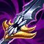

ABILITIES
-

Passive
Monkey's Agility
Udyr gains stacking Move Speed and Attack Speed after using an Ability. Udyr has four basic Abilities that he may use to swap between Stances. Changing Stances immediately ends both the passive and the on-hit portion of the previous Stance.
-
Q
Tiger Stance
Activation - Udyr's Attack Speed is increased for a few seconds.
Persistent Effect - Udyr's first attack and every third attack after will deal a high amount of damage over 2 seconds.
-

W
Turtle Stance
Activation - Udyr gains a temporary shield that absorbs damage.
Persistent Effect - Udyr's first attack and every third attack after heals him for 2.5% of his maximum health.
-
E
Bear Stance
Activation - Udyr increases Move Speed for a short duration.
Persistent Effect - Udyr's basic attacks stun his target for 1 second. This effect cannot occur on the same target for several seconds.
-
R
Phoenix Stance
Activation - Udyr unleashes pulsing waves of fire, dealing damage to nearby enemies.
Persistent Effect - Udyr's first attack and every third attack after engulfs enemies in front of him with flames.
For now, just know that Udyr has the most dogshit kit in the game and the order in which you upgrade your skills doesnt matter. Level up anything youre comfortable with, but try to have some points in Q whenever you can.
ITEMS
(The following items are the best for the Dyr, sorted based on their value. In most cases, these items make up the ideal Udyr build.)
Trinity Force
Just the best item you can have on the Dyr. Triforce has everything you need: health, damage, attack speed, CDR, movement speed and BIG tower damage. This item is good on literally every Udyr build, tank, bruiser, phoenix max and the best for breaching. However, the components are not that strong early on so going for something like extra Doran ring, blade, shield, Glacial Buckler or Hexdrinker on your first back is recommended.

Frozen Heart
The best armor option for the Spririt Walker. Mana, CDR and alot of armor, this item covers many weak spots of Udyr: high mana cost early and mid game, clunky skill changes with low CDR and low base health and armor, allowing you to face tank most AD champ as soon as you hit this item. Frozen Heart is so good, soemtimes its better to rush it before Triforce.

Boots Of Swiftness
The fastest boots for the (once upon a time) fastest champ in League. Slow reduction is your best friend when playing the Dyr. Plus, the high movement speed that it gives allows you to catch up with the 200-year club champs, which are mostly much faster than the Dyr. When it comes to boots, just remember that Swifties is always the best.
Force Of Nature
The MR counter of Frozen Heart. Speed, the highest MR of all items and AP damage reduction, you name it. FON will give you juice you need to run through any comp with any AP and CC. Spririt Visage? Get the fuck outa here. FON is the real deal.

Maw Of Malmortius
Enemy team has alot of AP and you feel like you need some sustain? Meet Maw, the AP Krytonite. Add Blood Thirster and Spririt Visage together, and you have the almighty Maw. You can imagine the devastation and save me some typing at this point.
Divine Sunderer
A solid pick when enemy team is somewhat beefy or you're playing phoenix and just too fed. Good %hp damage and very good healing. Slap on some tank items and become the Dark Soul boss.
Hull Breaker
The second best split push item right after Trinity. Hull gives you very good stats(hp, MR,armor) and huge tower damage. However, lacking CDR is a major drawback, leaving Hull at the bottom of this list.
Honorable mentions: Thornail, Spirit Visage(I know what I said but its a must when you have enchanter suppots like Yuumi), Mejai, BOTRK, Lich Bane, Ravenous Hydra, Wit's End.
Match Ups
Remember, there is no such thing as a good match up when playing Udyr. Therefore, I will categorize these match ups based on how you should play, not difficulty.